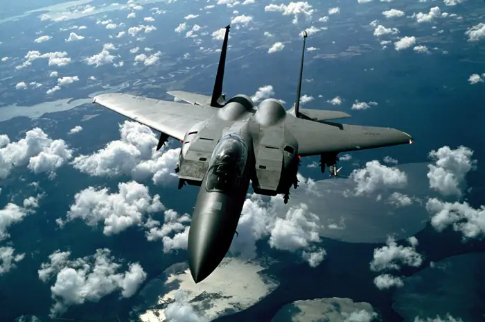

Saudi-led coalition intercepts Houthi drone headed for Mecca

What happened
NewsCord reported: “Saudi-Led Coalition Intercepts And Destroys Houthi Drone Near Mecca, Turki Al-Malki Says: 51 outlets compared” [6].
The Guardian framed the same development as: “Saudi Arabia warns of ‘red line’ after Houthi drone intercepted close to holy city of Mecca” [5].
6 distinct outlets were tracked covering this story today.
How outlets are reporting it
Al Jazeera: “Saudi-led coalition intercepts Houthi drone headed for Mecca” [1]
chinadailyasia.com: “Houthis claim downing Saudi armed reconnaissance drone in Yemen's Marib” [2]
BBC: “Saudi Arabia says it shot down Houthi drone south of Mecca” [3]
Daily Sabah: “Türkiye condemns Houthi drone attack targeting Mecca” [4]
The Guardian: “Saudi Arabia warns of ‘red line’ after Houthi drone intercepted close to holy city of Mecca” [5]
NewsCord: “Saudi-Led Coalition Intercepts And Destroys Houthi Drone Near Mecca, Turki Al-Malki Says: 51 outlets compared” [6]
Background and context
This brief aggregates 6 independent publishers covering the same event; each headline in the section above reflects that outlet’s own framing. Full original reporting is linked in the sources panel below.
Why it matters and what to watch
Sustained coverage across 6 outlets signals this story is developing and likely to move.
For the latest figures, official statements and corrections, follow the linked originals.
Sources & further reading
- Al Jazeera Saudi-led coalition intercepts Houthi drone headed for Mecca
- chinadailyasia.com Houthis claim downing Saudi armed reconnaissance drone in Yemen's Marib
- BBC Saudi Arabia says it shot down Houthi drone south of Mecca
- Daily Sabah Türkiye condemns Houthi drone attack targeting Mecca
- The Guardian Saudi Arabia warns of ‘red line’ after Houthi drone intercepted close to holy city of Mecca
- NewsCord Saudi-Led Coalition Intercepts And Destroys Houthi Drone Near Mecca, Turki Al-Malki Says: 51 outlets compared
This report aggregates 6 independent outlets; each item links to the original.